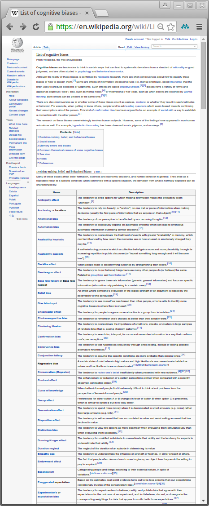
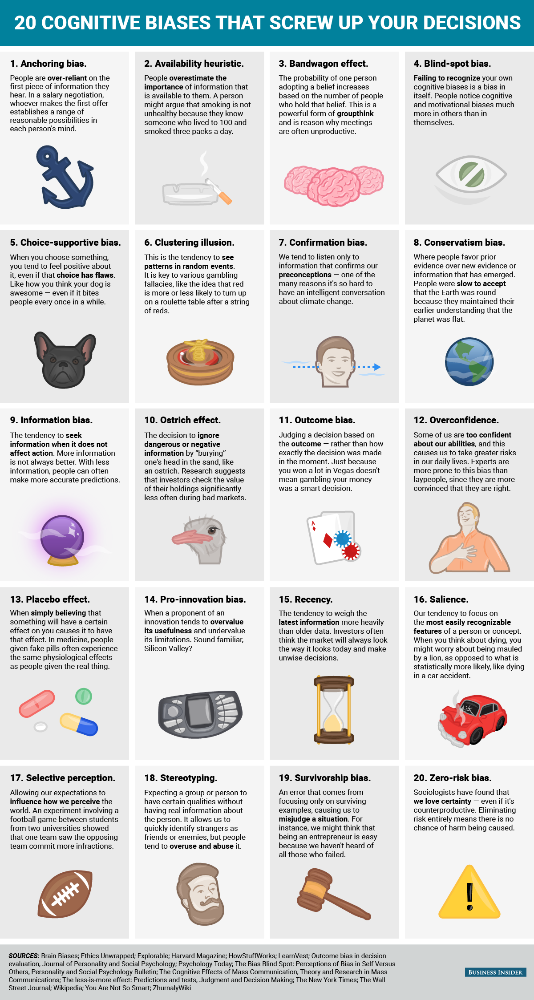

The Fellowship of the Ring
The Quest for Effective and Happy Teams
Joe Schmetzer @tumbarumba
Portia Tung @portiatung
The Fellowship of the Ring
The Quest for Effective and Happy Teams
Joe Schmetzer @tumbarumba
Portia Tung @portiatung
Quenta Agyris
- Of Burdens and Our Precious
- Of the Understanding of our Foe
- Of the First Battle
- Of a Plan to Defeat our Foe
- Of An Arduous Journey
Quenta Agyris
- Of Burdens and Our Precious
- Of the Understanding of our Foe
- Of the First Battle
- Of a Plan to Defeat our Foe
- Of An Arduous Journey
Biases from Wikipediahttps://en.wikipedia.org/wiki/List_of_cognitive_biases 
Biases from Business Insiderhttp://uk.businessinsider.com/cognitive-biases-that-affect-decisions-2015-8 
Illusion of certainty
The belief that an event is absolutely certain although it may not be
Illusion of asymmetric insight
People perceive their knowledge of their peers to surpass their peers' knowledge of them
Illusion of transparency
People overestimate others' ability to know them, and they also overestimate their ability to know others
Illusory superiority
a.k.a. better-than-average effect
Self-serving bias
The tendency to claim more responsibility for successes than failures
Fundamental attribution error
Joe is always sad vs Joe's grandmother just died
Halo effect
The tendency for a person's positive or negative traits to "spill over" from one personality area to another in others' perceptions of them
Hindsight bias
The inclination to see past events as being more predictable than they actually were; also called the "I-knew-it-all-along" effect
Outcome bias
The tendency to judge a decision by its eventual outcome instead of based on the quality of the decision at the time it was made.
Illusion of control
The tendency to overestimate one's degree of influence over other external events
Ostrich effect
Ignoring an obvious (negative) situation
Overconfidence
Excessive confidence in one's own answers to questions
Pro-innovation bias
The tendency to have an excessive optimism towards an invention or innovation's usefulness throughout society, while often failing to identify its limitations and weaknesses.
... and many, many more
Thinking, Fast and Slow

- System 1: fast, involuntary, no effort, biased
- System 2: slow, voluntary, effortful, lazy
- Most of what you think and do originates in System 1 with System 2 called upon to prevent errors
- The error prevention sucks
- This is a major cause of conflict between people
What is your Mindset?
Quenta Agyris
- Of Burdens and Our Precious
- Of the Understanding of our Foe
- Of the First Battle
- Of A Plan to Defeat our Foe
- Of An Arduous Journey
Of the Understanding of our Foe
Agyris Model I
Values
Agyris Model I
Assumptions
Agyris Model I
Consequences
Agyris Model II
Values
Agyris Model II
Assumptions
Agyris Model II
Consequences
Mindset Questionnaire Revisited
Agyris Model I vs Model II
Model I (Unilateral Control) is our default model in use
It is better for happiness and productivity to be working towards Model II
Quenta Agyris
- Of Burdens and Our Precious
- Of the Understanding of our Foe
- Of the First Battle
- Of a Plan to Defeat our Foe
- Of an Arduous Journey
Of the First Battle
Paula and Ted
Paula and Ted Review
Quenta Agyris
- Of Burdens and Our Precious
- Of the Understanding of our Foe
- Of the First Battle
- Of a Plan to Defeat our Foe
- Of an Arduous Journey
Of a Plan to Defeat our Foe
The Eight Behaviours for Smarter Teams
Paula and Ted Revisited (with added Behaviours)
Paula and Ted Review Review
Quenta Agyris
- Of Burdens and Our Precious
- Of the Understanding of our Foe
- Of the First Battle
- Of a Plan to Defeat our Foe
- Of an Arduous Journey
Of an Arduous Journey
Two Column Case Study
Two Column Case Study Example
Two Column Case Study for you
Plan - The end
Reflection: What did we learn?
Thank you for Playing!